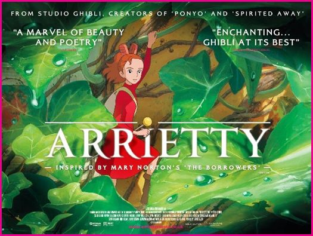

Significant Literature
 Written by the Pulitzer-winning biographer Robert Massie, this latest masterpiece follows the life of a German Princess named Sophia, or as you may know her, Empress Catherine the Great of Russia
Written by the Pulitzer-winning biographer Robert Massie, this latest masterpiece follows the life of a German Princess named Sophia, or as you may know her, Empress Catherine the Great of Russia
Written by the Pulitzer-winning biographer Robert Massie, this latest masterpiece follows the life of a German Princess named Sophia, or as you may know her, Empress Catherine the Great of Russia Best movie of 2012

Anther smashing success from the world renowned director Hiromasa Yonebayashi (Howl's Moving Castle, Ponyo, Spirited Away)based off the novel by Mary Norton, this movie transports viewers to the world of the Borrowers, tiny people living in secret and into the lives of Shawn and Arrietty and neither will ever be the same.